In February 2024 I traveled to Sweden, where I meditated for 100 hours in silence, over the course of 10 days.
In 2023 while scrolling through YouTube, I was recommended a video called "I Meditated in Silence For 10 Days". Having been interested in psychology, philosophy and mindfulness since childhood, this video piqued my interest. I watched some of the video and was introduced to the term "Vipassana". I bookmarked the video as it seemed interesting and forgot about it.
Six months later I was doing a digital cleanup, where I cleared all of my bookmarks. During this process I stumbled upon the video again. After looking at the Vipassana website, I was surprised to not only learn that a course was entirely free, but also that they offered 1, 3, 10, 30 or 60-day courses. Having wanted to go on similar retreats for a long time, I decided that it may as well be now. 10 days seemed ideal, it wouldn't disrupt my computer science studies too much, and it’d give me a good feel for the experience. Unfortunately it was impossible for me to find any 10-day courses in Denmark. The closest one was in Sweden.
Having never taken public transport by myself, this actually made me nervous, but I figured it was time to get over that fear. February 5th I sent a message to my friends, family and teachers, saying that they wouldn't be able to contact me for a while.
At five in the morning, I was waiting for the train in Central Jutland, Herning. Three hours later I was in Aalborg, where I had 3 minutes to run from the train station to the bus station, barely making it in time. I continued north towards Frederikshavn, where I boarded the ferry going to Gothenburg in Sweden. Now it was official.
While traveling I wrote in my journal about the fears, expectations and motivation for this journey. It seemed intuitive to meditate while traveling, so I did, even though I knew it was late preparation.
After a couple of hours had gone by, I arrived in Gothenburg. Having booked a small room in a hostel nearby, I started walking towards it, for a place to rest and stay the night.
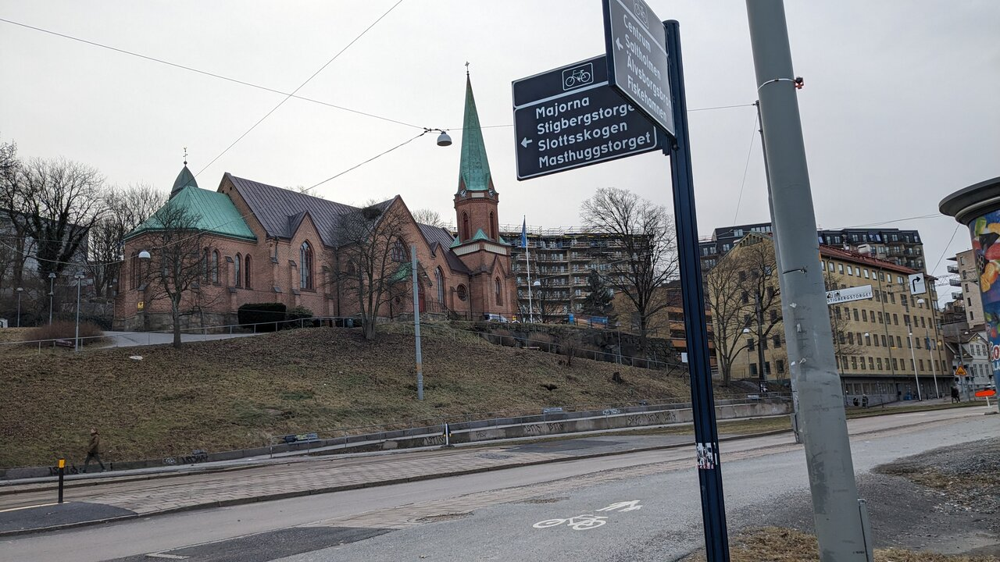
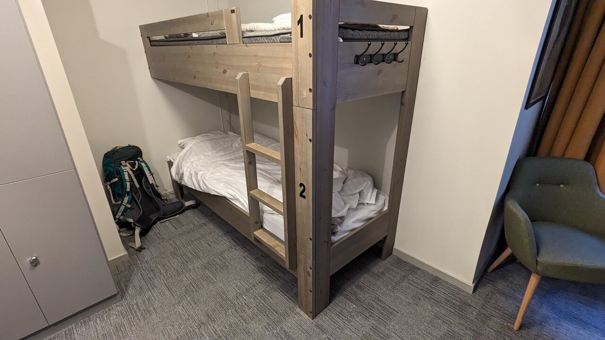
The room was nice and simple, more than adequate for a good night’s sleep. As my mind wandered into a hypnagogia, my roommate for the night came into the room. He wore headphones, but the audio was so loud it sounded like regular speakers. As day became night, he continued to walk in and out of the room. 3:15 he opened a bag of chips, I gave up. 3:30 in the morning I was now wandering the streets of Gothenburg. It was quite lovely.
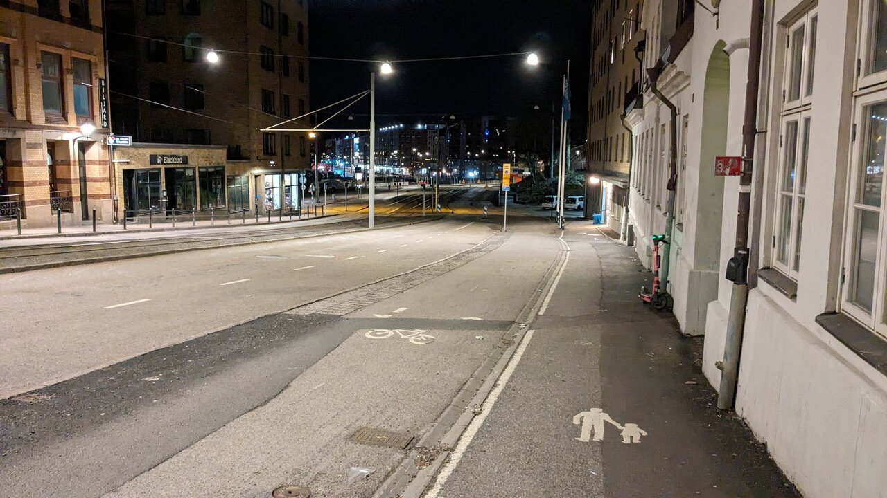
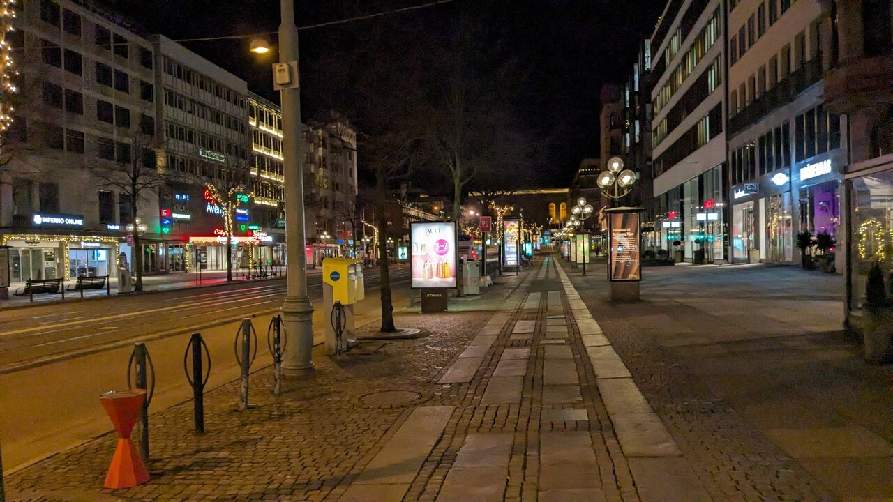
I didn’t pack food for multiple days though, and as I had to take a train later, I needed some sort of breakfast. A couple of kilometers away from the hostel, there was a McDonald’s. This is also where I was reminded, that this really isn’t Denmark. I tried to walk in quietly, but it didn’t prevent the homeless people from being woken up by my presence. When I got my burger, soda and fries, I sat on a bench outside to eat it.
At 5:15 in the morning, I found myself at the Gothenburg Centralstation, where I waited for my train to Mjölby.
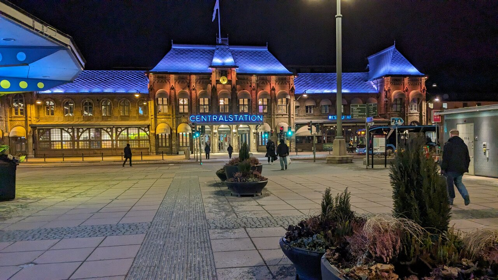
Four hours later at 9:15, I was now in Mjölby, it was freezing cold with a lot of snow. The travel wasn't done yet though. In five hours a bus would arrive to pick people up, which would continue to the Vipassana center. So I needed something to pass the time. Being tired from a lack of sleep and cold from the Swedish weather conditions, I was looking for some place to stay, ideally without paying as I didn't have a lot of money. Not being able to find a library, my eyes turned to the church. I went inside, sat on a bench and listened to a woman practicing her vocals for an hour or two. It felt magical, like a private concert. I couldn't resist the temptation to lay down and take a nap, one hour later I woke up in the church and decided to get lunch at a Chinese buffet nearby.
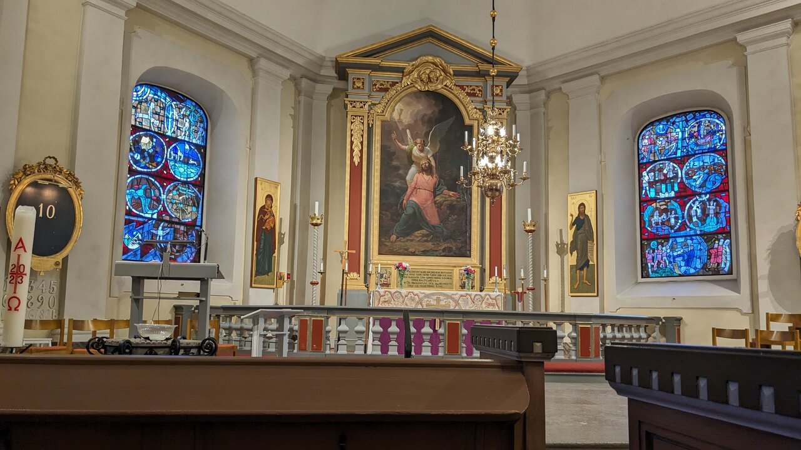
I started walking towards the bus stop, quickly being greeted by other Danish people. The bus ended up not having space for all of us, so I and four other people stayed behind and waited an hour to be picked up by another bus. We were now heading towards the Vipassana centre.
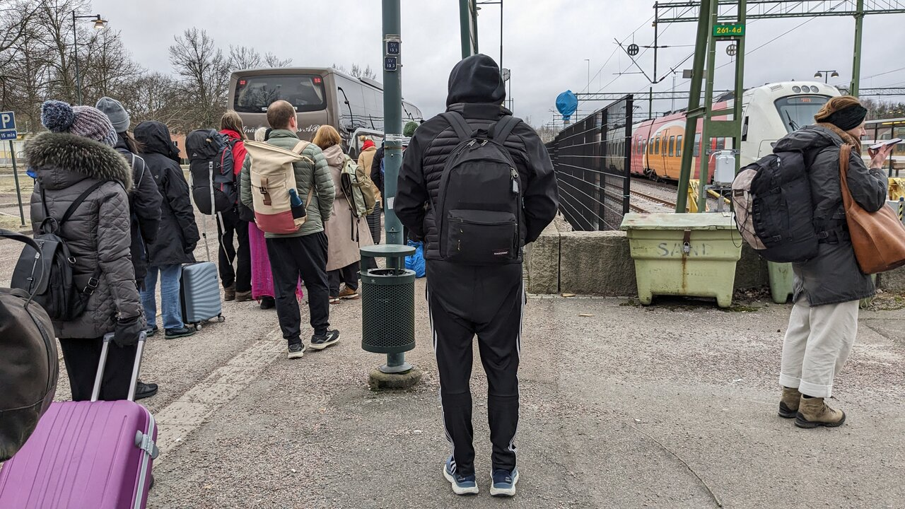
At 16:10 we arrived.
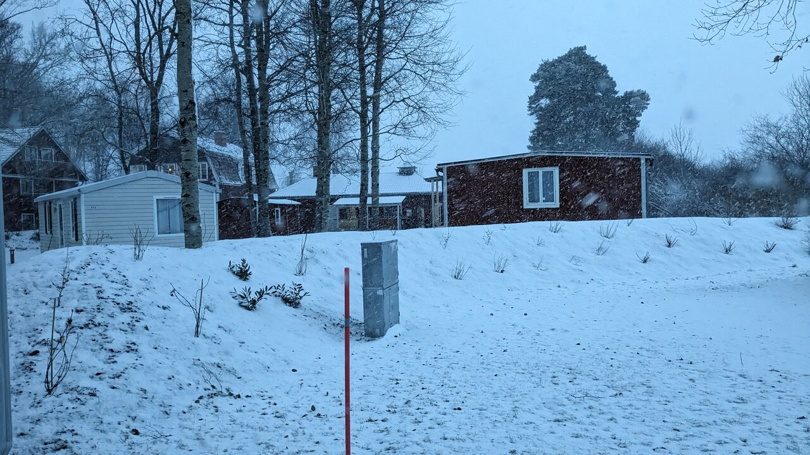
We went inside to the main building, giving away our possessions (phone, jewelry, books, etc.) to dedicate the next 10 days to the experience. They gave out small flyers with the daily schedule, which looked like this:
The flyer also contained The Code of Discipline:
All who attend a Vipassana course must conscientiously undertake the following five precepts for the duration of the course:There are three additional precepts which old students (that is, those who have completed a course with S.N. Goenka or one of his assistant teachers) are expected to follow during the course:
- to abstain from killing any being;
- to abstain from stealing;
- to abstain from all sexual activity;
- to abstain from telling lies;
- to abstain from all intoxicants.
- to abstain from eating after midday;
- to abstain from sensual entertainment and bodily decorations;
- to abstain from using high or luxurious beds.
This was going to be interesting.
All participants (100+ people) were assigned a room in one of the gender-segregated buildings. I went to my room, prepared my bed, clothes and so on. Shortly after, my roommate for the next 10 days entered. We spoke a little, he was from Stockholm.
A couple of hours later, we heard the bell, which signaled that we should be going towards the meditation hall. Each of us had our own place to sit in the meditation hall, with our own pillows and blankets. The men sat on the left side with green blankets, women sat on the right side with white blankets.
Two people entered the room at the very front, and sat on raised platforms. Those were our teachers, one male and one female.
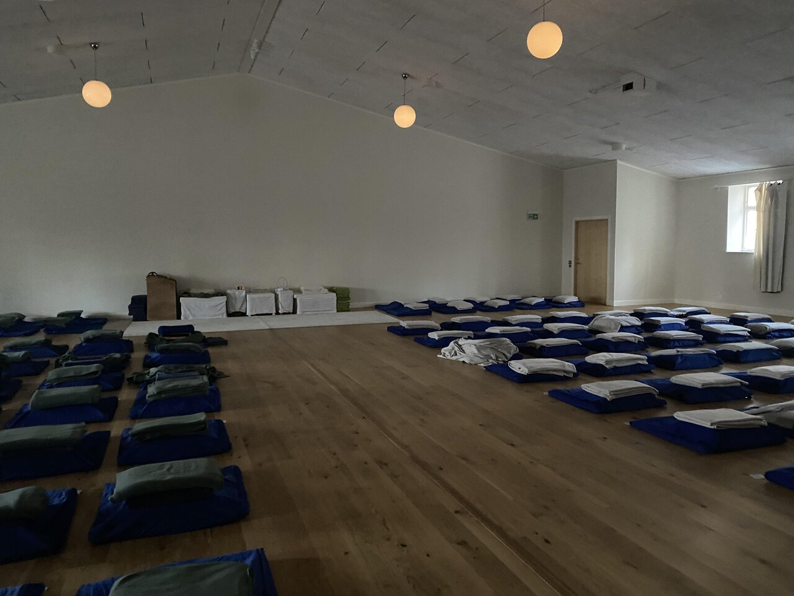
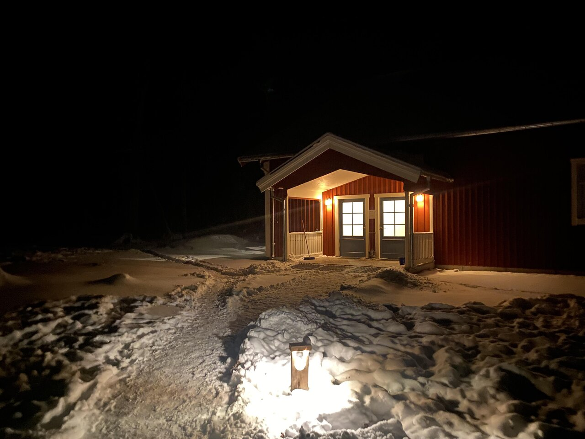
We sat down and waited in silence. An audio recording was started of the teacher S.N. Goenka. I almost started laughing as I’m sure many others did. The recording started with S.N. Goenka humming and singing in his own unique way.
He explained that for the next ten days we would be challenged mentally and physically. He warned us that the urge to quit day two and six would be strong. When we left the hall, all forms of communication were to be avoided, unless it was completely necessary. No talking, gestures or even eye-contact. We did the first meditation with our eyes closed, and we ended the session with a mantra, sending vibrations through the entire hall, it felt magical. We stood up, headed to our room in silence and went to bed.
I woke up at 3:00... laying in bed, I contemplated the challenging next few days, waiting, daydreaming. An hour went by and the morning bell was struck, I got out of bed, took a short shower and went to the meditation hall.
Most who have meditated will have tried Anapana meditation, where you focus on the breath, every inhale and exhale. This is similar to how we started at the retreat. If we imagine a triangle from each corner of the mouth to the point between the top of the nose, this was the area we were to focus on. We closed our eyes and observed sensations caused by the breath, that popped up within that area. Whether it was the cold air on the nostrils or the breath hitting the hair above the lip. We were told to
notice it and focus on it. Like any type of meditation with intentional focus, a major obstacle is… the inability to focus. One moment you’re looking for a sensation, the next moment you catch yourself in a daydream, that your thoughts have been consumed by for the last five minutes. “The Monkey Mind” as Goenka called it. Your mind repeatedly wanders, but moving focus back to the sensations become smoother, quicker and easier.Instructions were given by an audio recording of Goenka speaking English. Then a Danish recording would play right after, explaining it again. There’d be long periods of silence, at times interrupted by Goenka humming, singing or reminding us what this journey is about.
After two hours of noticing physical sensations and training one’s focus, it was time for breakfast. Each person was given a specific seat in the dining hall, this is where we ate our meals each day. Breakfast always had some porridge with raisins, seeds, tea, honey, bread and butter. No coffee was allowed. Like most other people, when I was done eating, I engaged in one of three activities... resting in my room, taking a walk in the Swedish forest or sat down to meditate. A large section of the forest
was marked with colored tape, we were not allowed to leave the area. There were two marked areas, one for men and one for women.After the break we meditated some more, sometimes in our own room, at other times in the meditation hall, then we’d have lunch, usually a hot vegan meal. Later we’d also have a tea break, which for new students (like me) included some fruit. Older students were only offered tea.
During one of the meditation sessions, our names were called one by one, in groups of four. Each teacher, would say the name of four students, followed by the four students sitting down in front of the teacher, being asked questions about the location of the physical sensations and the intensity. After that we return to our seats or go back to our room. This was repeated until every student had sat in front of the teacher. After that the other teacher would repeat the process, for the opposite gender.
Each day would end with a video recording of Goenka talking about the day, the challenge that lies ahead, as well as thoughts and stories about his personal life, Buddhism, health and more. I and many others, looked forward to this. Not only was it insightful, but also entertaining.
This was the daily structure, ten hours of meditation, two meals, one tea break and one hour of dedicated rest time.
As we kept practicing, we were instructed to narrow our focus. So instead of a triangle from the corners of the mouth to the nose bridge, we’d now focus on the upper lip and nostrils, noticing sensations within this area. This was then later changed to focus only on the upper lip.
The first couple of days laid the groundwork, where we practiced narrowing our focus and observing the tiny physical sensations caused by the breath. But now we started scanning our body from head to toe, very slowly, following the instructions as given by Goenka. First we focused on the top of our head, waiting until we felt a physical sensation. It didn’t matter what type of physical sensation it was, it could be temperature, an itch, pain, sweat or any other physical sensation. What’s interesting is that as one scans down the body, it’s still possible to feel some of the sensations observed earlier. So even though I was now scanning my left arm, I could still feel some of the sensations, from when I was scanning my head. We kept moving our focus down, covering more and more of the body in these sensations. It felt pleasant. As patches of vibrations covered our body and we reached our toes, Goenka told us to move our focus back to the top of the head... this was it.
It was like an explosion. All sensations became one big wave of vibration. Everything disappeared, my entire existence. Vibrations were radiating from the top of my head throughout my entire body. I could feel myself shaking, but my body was gone. The entirety of existence was here, I felt content. As our physical body was disintegrating in this sensory explosion, Goenka said “there is no past, there is no future, there is only Vipassana”, adding to the intense experience. We opened our eyes, the meditation session was done. Several people started crying and laughing. The experience was bliss.
Now came the next major challenge, the purpose of several philosophies, religions and Vipassana… to reduce suffering.
As humans we have a tendency to repeat positive experiences to chase the same effects as before, while also trying to avoid negative experiences. We are addicts, constantly seeking comfort in what we know. In Vipassana this is the foundation of all suffering, craving. We repeated the process of scanning our body, but now it was with the goal of noticing the sensations, without trying to force them and without attaching ourselves emotionally to whether they feel good or bad. We’d notice uncomfortable like pain or an itch, taking note of them being there, then moving on.
A day or two after the first Vipassana experience, it became much harder. We now had three sessions each day with “Iron Will”, where we’d sit in a certain position, and try not to adjust for the rest of the session... and let me tell you, it starts to hurt. I could feel pain in my knees, hips, back and neck. We were to repeat the body-scan from head to toe, while trying not to assign a negative label to what we felt, even when it was hurting. What’s interesting is that as one starts to notice the pain, and focus on it will all intent, it starts to transform into something else. My upper back would hurt, and as I focused on where the pain was most intense, I’d start to feel the heat from the blood rushing to that spot. Focusing on that, and I’d be able to feel my pulse below the heat. As you reach this state, the pain is gone. It is now just intense heat, a pulse or if you get deep enough, vibrations. That is at least until you lose focus, at which point it becomes pain again.
At this point we were also told to integrate awareness into everything we did. As we took walks outside, feel the sensations from the air, the ground beneath your feet, the sounds, sights and smells. We were to feel the texture of what we ate, the taste of what we drink, to brush our teeth with intent. Everything was to be observed.
There is a quote from the Vietnamese Buddhist monk Thich Nhat Hanh, which encapsulates the essence of this quite well:
Drink your tea slowly and reverently, as if it is the axis on which the earth revolves – slowly, evenly, without rushing toward the future. Live the actual moment. Only this moment is life.
As we were nearing the end of the course, the weather reflected the journey in a way I can only describe as "symbolic". Throughout the entire course it was cloudy and cold with snow and ice. But not today. The snow was melting and the sun was peeking through the clouds. While waiting for lunch, we stood outside in a long line… facing the sun, seeing the light and feeling the heat on our bodies and face.
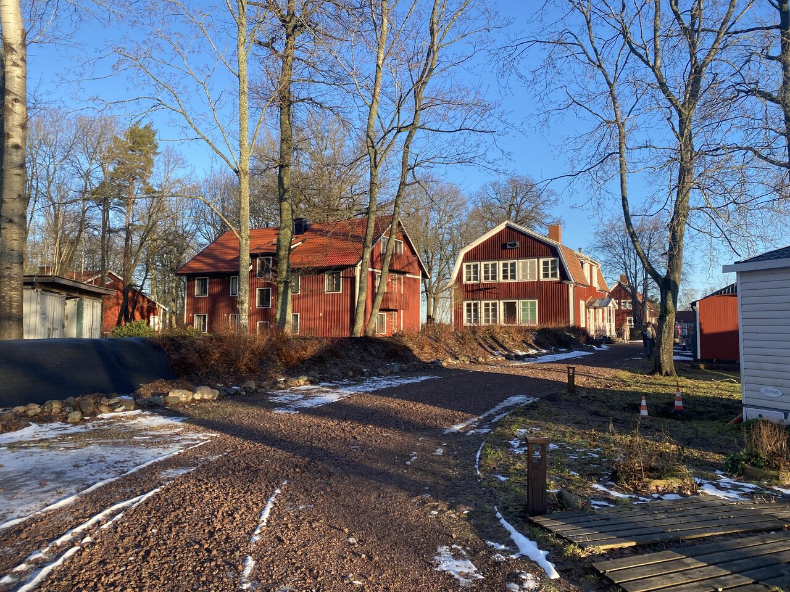
We ended with a meditation of love, wishing peace and well-being to all living things. It was neatly tied together with a mantra, sending vibrations throughout the entire meditation hall. We were now allowed to talk, but only when we had left the hall.
The main building (where we’d eat lunch) had a board on the wall, for people to offer rides to different locations. I asked a person, Emil, if I could join him for a ride to Denmark. As people were wishing each other goodbye, one person said “have a good life” as they left. Some of us found this quite funny and used the phrase for the rest of the day.
I was now in a car with four strangers from the course, one of which had been a volunteer at the Vipassana center for three months. Over the next 8 hours or so, we talked about meditation, shadow work, drugs, ice-baths and much more. We went to eat and go shopping, then we continued the journey home. Three people got off at Copenhagen, then it was just me and Emil, until we reached Odense, from which I'd continue home by train.
As I was preparing to leave the Vipassana center and as I came home, a question I was repeatedly asked was this:
”Will you be going again?”
My answer was “no”, with certainty. But with time having passed, not only would I like to do it again, I’d like to do it for even longer, like a month.
A lot of the recordings by Goenka made references to rebirth and more, which makes sense as the foundation of the practice, is built on Buddhism. I do not personally believe in every reason stated for certain parts of the practice, but as Goenka himself mentioned, it wasn’t required to believe all of it, in order to gain value from it.
The benefits of meditation is backed by a mountain of science, into these ancient practices. But the main takeaway from this journey, is that there’s much more time in a day, than we might think. When you remove distractions and temptations, time moves very very slow. After the first two days during the course, I felt as if a week had already passed. Funnily enough, as you are more aware of the life you’re living, the more time it feels like you have to live it.
Here’s a map of the journey, with red being the trip to the location and blue being back.
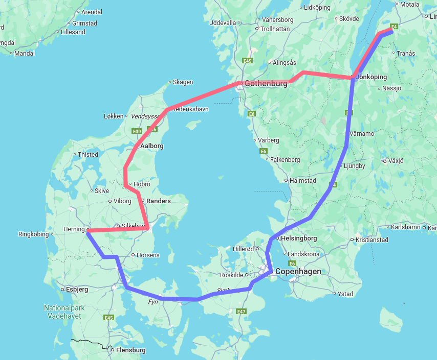